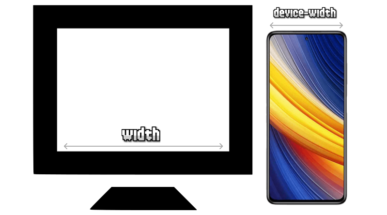

Diseño Web Responsivo
Es una técnica de diseño que adapta la presentación de un sitio web al tamaño y orientación de la pantalla del dispositivo.
Conceptos Esenciales
Mobile-First
Primero se diseñan estilos para móviles, ampliando progresivamente con @media (min-width).
Desktop-First
Comienza en pantallas grandes y se adapta hacia abajo con @media (max-width).
Unidades de Medida Relativas
Se usan unidades como em, rem y % para lograr adaptabilidad.
Flexbox
Flexbox organiza elementos en una dirección principal (fila o columna), adaptando automáticamente el espacio.

Propiedades Clave
justify-content: alinea horizontalmente.align-items: alinea verticalmente.flex-wrap: permite que los ítems salten de línea.
CSS Grid
CSS Grid crea estructuras bidimensionales (filas y columnas) fáciles de controlar.


grid-template-columns: define el número de columnas.grid-gap: establece espacios entre elementos.
Comparación y Combinación
Ejemplo con Flexbox
Producto 1
Producto 2
Producto 3
Ejemplo con Grid
Producto 1
Producto 2
Producto 3
Maquetación Híbrida
Combinando Flexbox para la estructura general y Grid para secciones internas se logra mayor control y flexibilidad.
Viewport
El viewport define el área visible de una página. La etiqueta meta asegura que el ancho del dispositivo sea el usado para el diseño.

Conclusión
El diseño responsivo mejora la experiencia del usuario, el rendimiento del sitio y su compatibilidad con cualquier dispositivo.